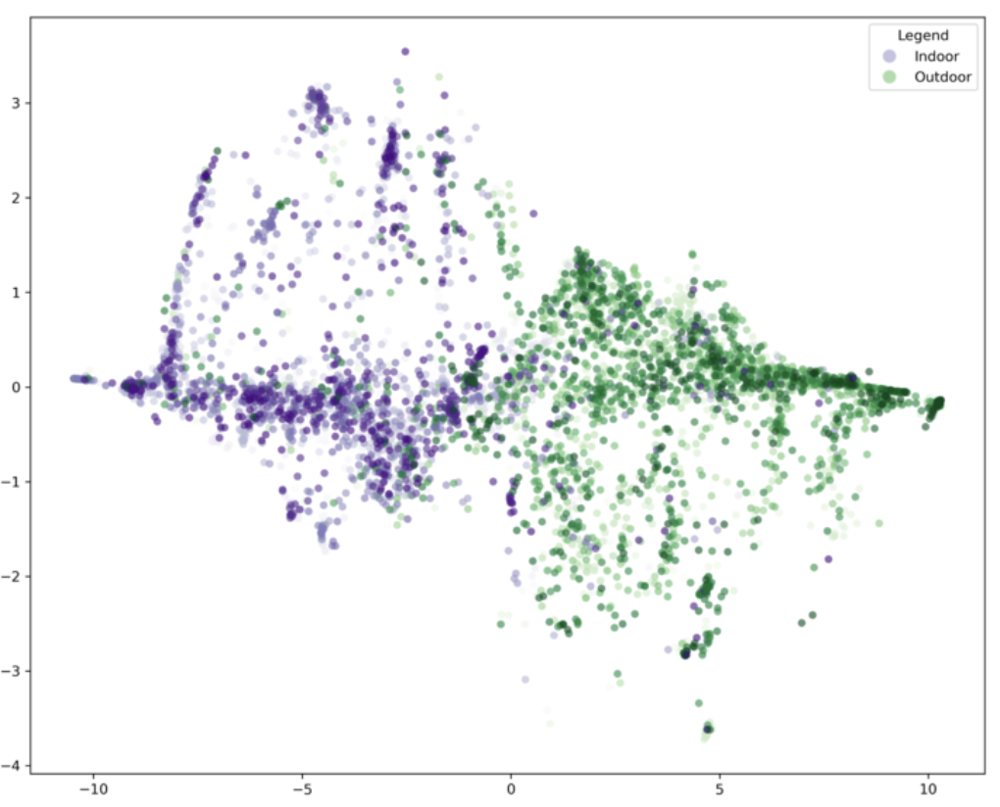
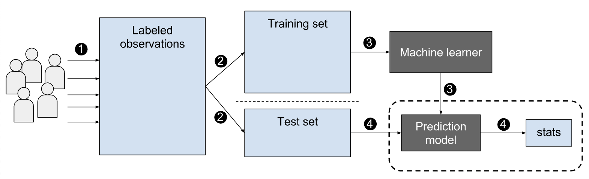
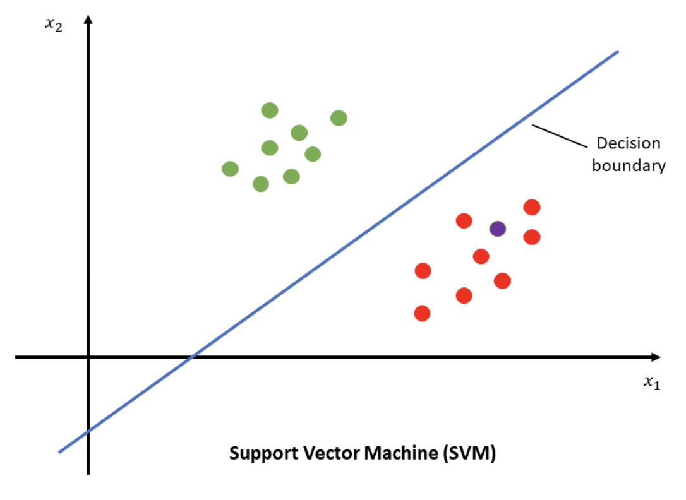
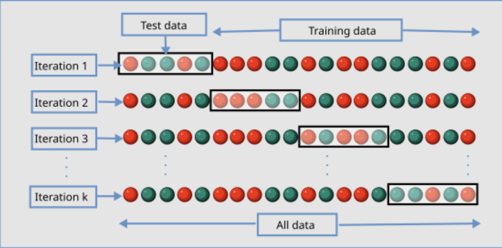
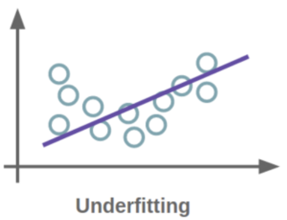
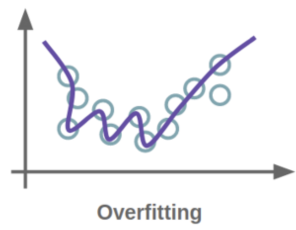
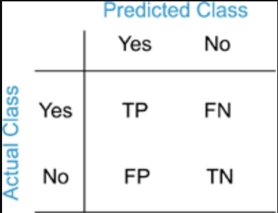

13 Machine Learning and Data Analysis
Overview
Machine learning is a branch of computer science that uses large datasets to train algorithms, enabling them to mimic human learning. Over time, as more data is fed into these models, the algorithms dynamically adjust, and their accuracy improves. Unlike humans, however, machine learning algorithms can process vast amounts of data at much greater speeds, allowing for faster and more scalable content generation than is possible by human effort.
Machine Learning and Cognitive Science
A key part of many cognitive science labs involves running EEG experiments to monitor participants’ brain activity. The fascinating thing about brain waves is that their frequency and amplitude can tell us what kind of brain activity is taking place. Now, imagine if we could train a model to make these determinations automatically. For instance, could we train an algorithm to identify whether a participant is looking at a mountain or a desert purely based on their brain activity?
This is possible through classifiers—models trained on brain wave data. By training the model on this labeled data, we can predict what the participant is viewing based on their brain activity, even without knowing directly. In this way, brain waves act like a code, revealing what the participant is seeing. In the decoding section, we will discuss how classifiers can aid our data analysis in more depth.
Neural data is multivariate, as it captures various aspects of brain activity simultaneously. This complex jumble of data is stored in multidimensional matrices, where each data point corresponds to an electrode, a time point, and a trial. Of course, dimensions vary depending on the number of electrodes. In the VCL, data matrices are 128 dimensions, as our EEG machine has 128 electrodes. Analyzing this data efficiently is crucial, as it would be impossible to process manually. Machine learning provides the necessary tools to handle this complexity, enabling us to extract meaningful insights from the data.
There are three main types of machine learning models: unsupervised, supervised, and reinforcement. In the following sections, we will discuss the differences between these types of models and explain their primary uses.
Unsupervised Learning
Unsupervised learning involves training a model on unlabeled data, allowing it to independently identify patterns in a dataset.
As mentioned earlier, the VCL often analyzes large datasets with hundreds of dimensions. While the human mind can only visualize up to three dimensions, what happens when we’re working with a matrix of 128 electrodes across 600 timepoints and 1200 trials? This is where the Curse of Dimensionality comes into play, referring to the challenges that arise when analyzing data in such high-dimensional spaces (general definition). Why is it so hard to analyze data in too many dimensions?
- The data is hard to visualize, comprehend, and interpret.
- When there are more dimensions, the data points spread out, making it harder to detect patterns.
- The amount of computational power needed for an algorithm to analyze the data increases, and a tremendous amount of storage space is needed for the data.
- Distance metrics become skewed. As the number of dimensions increases, the relative distances between the data points decrease. The distance between a point’s nearest vs. farthest distance shrinks, essentially the data flattens, making the relative distances provide less information.
- As dimensions increase, models are more likely to overfit, meaning that noise and outliers will likely be incorporated into training datasets, negatively impacting the accuracy of machine learning and data analytics models.
- Even if our dimensionality increases, the dataset does not necessarily increase. In other words, a large number of dimensions doesn’t necessarily mean an increase in useful information.
Below, we will explore 4 main types of unsupervised learning: Principal Component Analysis, t-SNE, Multidimensional Scaling, and Clustering.
Principal Component Analysis
PCA addresses two fundamental questions: - Is there a way to summarize the data by identifying its most important variables? - How can we quantify the amount of information in a dataset? (Hint: consider the variance – the more information, the greater the variance.)
Principal Component Analysis (PCA) is a technique for reducing the dimensionality of a dataset by creating principal components—new variables, uncorrelated from each other, formed as combinations of the original variables. Graphically, PCs will be transformed into axes, just like the original set of variables, as PCs themselves are a set of variables by nature.
PCA projects the data along directions of maximum variability, with most information typically captured by the first component. In essence, Principal Component Analysis is a technique that exploits dependencies (relationships) among variables to represent high-dimensional data in a lower-dimensional, more comprehensible form. Below are some FAQs regarding PCA:
What do you mean by uncorrelated, and why do we need individual PCs to be uncorrelated from each other?
Great question! In data analysis, it might seem counterintuitive at first to identify discorrelation. However, in PCA, it is actually essential. When we transform data that are originally correlated onto axes with new variables that don’t exhibit any correlations, we are able to see how different variables independently affect each data point without having to account for any innate relations between these variables.
Simple example: Let’s say I want to see what contributes to a person’s longevity. I derived 2 principal components from a large amount of detailed health metrics and age at death taken from a large sample of people and summarized these components to be describing “height” and “happiness”. With some simple transformations of data points, I am able to conveniently visualize on one graph how height and happiness, two things that would be statistically proven as uncorrelated, individually contribute to longevity.
Interesting to see how we can also use discorrelation to our advantage too!
Why are we capturing maximum variance?
The logic here is quite similar to what is described above. A large spread of data might indicate low precision, but it is exactly what we want, because it means that we are able to find a component, a new variable that capture the most diversity in the data we have observed, so when we are reducing the dimensionality of the data, we can also preserve some of the unique features of it.
Steps for PCA
Below are the overview of the steps to conducting a PCA. For further information than what is provided in this textbook, feel free to check the footnotes for more information. Additionally, it is important to note that code packages exist in many coding languages to aid in the PCA process. These computations are going to be rarely done by hand if at all, but it is important to understand the mechanism of it.
- Standardize the Data: If the variables have different units or scales, standardize them to ensure each variable contributes equally to the analysis.
- Compute the Covariance Matrix: This matrix captures the relationships between variables, showing how they vary together.
- Calculate Eigenvalues and Eigenvectors: The eigenvectors (principal components) indicate the directions of the new feature space, while the eigenvalues represent the variance magnitude in those directions.
- Sort Eigenvalues and Eigenvectors: Arrange eigenvalues and their corresponding eigenvectors in descending order. The eigenvector with the highest eigenvalue becomes the principal component, capturing the most variance.
- Select Principal Components: Choose the top k eigenvectors corresponding to the k largest eigenvalues. These selected eigenvectors form the new feature space.
- Transform the Data: Project the original data onto the new feature space using the selected principal components.
Multidimensional Scaling (MDS)
Multidimensional Scaling (MDS) is a technique for visualization and dimensionality reduction that highlights differences between objects in a dataset. Like Principal Component Analysis (PCA), MDS represents the similarities and dissimilarities among data points but often provides a more intuitive visualization of these relationships. In MDS plots, more similar objects appear closer together, while less similar objects are positioned farther apart, based on their relative distances. The ‘scaling’ in MDS refers to its ability to reduce the number of dimensions in the dataset while preserving the original differences (or levels of similarity and dissimilarity) between data points, even in lower-dimensional spaces.
MDS takes data input via a symmetric matrix, which states the relationships between data points. Based on the symmetric matrix, a graph is produced showing the distance between each of the cities.
For a simple example, check out this link: https://www.statisticshowto.com/multidimensional-scaling/
There are four basic steps for computing MDS:
1. Assign Initial Coordinates: Place objects at arbitrary coordinates in an n-dimensional space. This initial assignment serves as a starting point for the MDS process.
2. Calculate Euclidean Distances: Compute the Euclidean distances between all pairs of points based on their initial coordinates. Euclidean distance represents the direct “as-the-crow-flies” distance between two points, calculated using the Pythagorean theorem. These distances form the similarity matrix and are based on the initial, arbitrary coordinate assignments from step 1.
3. Compare with Original Distances: Compare the calculated distances to the actual distances, the ground truth, in the original similarity matrix. This comparison uses the “stress function,” a measure of goodness of fit. Lower stress values (close to 0) indicate a better fit, while values above 0.2 are generally considered poor.
4. Adjust Coordinates to Minimize Stress: Based on the stress value, iteratively adjust the points’ coordinates to reduce stress, aiming to make the calculated distances align more closely with the original ground truth data.
For more information, consult the links provided in the footnotes.
T-Distributed Stochastic Neighbor Embedding (T-SNE)
t-SNE (t-Distributed Stochastic Neighbor Embedding) is another dimensionality reduction technique. The main difference between PCA and t-SNE is that PCA is a linear method that captures maximum variance across components, while t-SNE is a nonlinear technique designed to preserve pairwise similarities between data points in lower-dimensional spaces. Unlike PCA, which emphasizes overall data variance, t-SNE is particularly effective at revealing local clusters and relationships within complex datasets, specifically by taking into account the distances between a point and its closest neighbor (hence, the pairwise distance).
After determining the similarity measure between pairs of data points in a high dimensional space, we want to represent these points in a low-dimensional space, most often a 2-D plane. The algorithm transforms different regions uniquely because it’s nonlinear, adapting to the structure of the data. Additionally, t-SNE has a parameter called perplexity, which controls the number of nearby data points considered when positioning each point in the lower-dimensional space. For a more in depth tutorial on how t-sne is applied and the mathematical procedures involved, you are welcome to check out this video.
Here is an example of t-SNE application in the VCL:

We gathered descriptions from Research Cloud for images in our large dataset. We wanted to know if the descriptions of indoor and outdoor locations are different from one another. The first thing we did was to feed the responses to these images into a Large Language Model (LLM) to turn these sentences into sentence embeddings.
For brief context, an LLM is a machine learning model that aims to predict and generate language in the way a human would (ChatGPT would be a prime example). A sentence embedding is just a way to mathematically represent a sentence as a vector in a multi-dimensional space.
For this language model, each sentence embedding, each vector, exists in a 768 dimensional space. Thus, each vector here represents 1. A sentence and 2. A direction for a data point’s location in a high high high dimensional space. Visualizing a 768 dimensional space is utterly beyond human ability and comprehension. Thus, t-SNE becomes a useful tool to reduce the dimensionality down to 2 for better visualization.
As you can now easily see, the indoor description embedding does seem to be quite different from the outdoor ones. Big ups t-SNE!
In conclusion, here is a comparison of the 3 types of data analysis mentioned so far:
| Feature | t-SNE | PCA | MDS |
|---|---|---|---|
| Purpose | Visualizing high-dimensional data in lower dimensions (2 or 3). | Reducing dimensionality while preserving variance. | Representing high-dimensional data in lower dimensions, preserving distances or dissimilarities. |
| Technique Type | Non-linear dimensionality reduction. | Linear dimensionality reduction. | Non-linear dimensionality reduction. |
| Preserved Information | Preserves local structure (similar points stay close). | Preserves global structure (maximizes variance). | Preserves global distances between points (similarity or dissimilarity). |
| Interpretability | Difficult to interpret as it focuses on local patterns. | Easy to interpret, with clear representation of variance. | Can be more interpretable if the dissimilarities are meaningful. |
| Data Distribution Assumption | No assumption (works with complex, non-linear data). | Assumes linear relationships between variables. | Assumes distances between points are meaningful and tries to preserve them. |
| Computational Complexity | High, especially with large datasets. | Relatively low (involves linear algebra operations). | Moderate (uses optimization to minimize stress). |
| Usage | Best for visualizing clusters and local patterns. | Best for understanding main directions of variance. | Best for visualizing data with known dissimilarities or distances. |
| Output | Provides low-dimensional embedding for visualization. | Provides principal components capturing maximum variance. | Provides a low-dimensional representation based on global distances. |

Clustering
Clustering is another type of unsupervised learning in which the model functions by detecting patterns in the unlabeled data and making boundaries around these clusters. Oftentimes, we want to analyze large amounts of data, but we do not know about the existing relationships within the dataset. The purpose of clustering is to take a heterogeneous dataset and form homogeneous subgroups. Similarity within a homogeneous subgroup can be measured/determined based on a variety of characteristic,s including Euclidean distance, cosine similarity, etc.
Supervised Machine Learning
In supervised learning, the model is trained on labeled data.
For instance, if the dataset contains an inventory of fruits in a grocery store, the labels might include categories like apple, pear, banana, and mango, and each item in the dataset would be categorized appropriately. The model learns from these labels to classify new data. There are two subtypes of supervised learning: classification and regression.
Classification
Classification algorithms are used to group test data into specific categories (image of a driving hazard or no hazard, image of a kitchen or no kitchen). There are also a variety of classifier shapes that can be used. For the sake of simplicity, our lab often uses a linear classifier, which means that the data will be separated by straight lines (each data point belongs in one category and is separated from the rest).
Support Vector Machines

Support Vector Machines (SVMs) are a type of supervised learning model used for classification tasks and are often employed in our lab. Researchers use these algorithms to classify data into two or more categories. In its simplest form, SVMs perform binary classification, where each data point belongs to one of two classes (e.g., an apple belongs to the fruit category and a broccoli belongs to the vegetable category). To separate these classes, SVMs establish a decision boundary. In the fruit versus vegetable example, we can think of a decision boundary being the definition of what makes something a fruit and what characteristics make something a vegetable. In a two-dimensional space, this boundary is a line; in three dimensions, it’s a plane; and in higher dimensions, it is referred to as a hyperplane.
In the VCL, we work with data from 128 electrodes across thousands of time points and trials, hyperplanes are particularly relevant. The SVM algorithm finds the optimal hyperplane that best separates the data. By “optimal,” we mean the hyperplane that maximizes the margin, or the distance between the hyperplane and the closest data points from each class. While multiple hyperplanes can theoretically separate the classes, the goal is to identify the one that creates the maximum margin. This maximized margin reduces the potential for classification errors by creating the greatest possible separation between the classes. Support vectors are lines drawn through the closest data points to the decision boundary. Based on where new data falls, it is classified into the appropriate category. After learning about different types of supervised and unsupervised learning, let’s walk through how these concepts get used, often in tandem with one another, to aid us in better understanding the neural data we, as vision scientists, gather!
Decoding Neural Signals
Overview: What is decoding?
Decoding is the process of interpreting neural signals to identify the stimulus or condition that elicited them. The brain can selectively filter information in behaviorally useful ways, a process known as intelligent information loss. Additionally, the brain can generalize information beyond specific conditions, representing it in a way that remains consistent regardless of the exact conditions used to build this representation—this is known as Invariant Representations. Decoding attempts to answer the question: Does there seem to be a distinct way the brain processes a certain stimulus, or does it seem to process this stimulus in the same way it processes other stimuli?
Linear Decoding Models
In general, Linear Decoding Models aim to estimate information from neural activity under the assumption that there is a linear relationship between the neural responses that are the result of a linear combination of the various variables. If the decoding model mentioned here is aimed at discrete variables, it can be used as a classification method for supervised machine learning. Three models that are commonly employed for linear decoding are the following: Linear Discriminant Analysis, Linear Regression, and Support Vector Machines. SVM has already been described above, because it is the main model used in the VCL, but here we will briefly go through the rest.
Linear Discriminant Analysis is a type of supervised classification with the purpose of reducing dimensionality in a dataset. The purpose of LDA is to effectively separate two or more categories. There are a couple of assumptions that LDA must follow. 1. The data must be normally distributed and the covariance matrices of each category must be equivalent. 2. The data must be able to be separated from each other via a linear boundary. The linear boundary that is created must maximize the distance between the average of each of the two categories and minimize the variation that exists between each category. For more information regarding how to implement LDA in Python, please refer to the link in the footnote.
Linear Regression is a supervised learning model used to make predictions based on input data. In this model, labeled data is fed to the algorithm so it can learn and output predictions along an optimized linear function, which can then generalize to other datasets. Essentially, linear regression determines the relationship between one or more independent variables and one or more dependent variables. When there is only one independent variable, it’s known as simple linear regression. With multiple independent variables, it’s called multiple linear regression. If there is a single dependent variable, the model is referred to as univariate regression, whereas multiple dependent variables define multivariate linear regression.
Classifier Information
Supervised learning models employ various classification methods, three important ones being Naive Bayes, Linear Discriminants (discussed above), and k-Nearest Neighbors.
Naive Bayes Classifiers are probabilistic machine learning models used for classification tasks. They are based on Bayes’ Theorem, which calculates the probability of an event occurring given prior knowledge of related conditions. The “naive” aspect refers to the assumption that features are conditionally independent, meaning that the presence of one feature does not affect the presence of another. Despite this simplification, Naive Bayes often performs well in practice, especially in applications like text classification and spam detection.
K-Nearest Neighbors (KNN) is a non-parametric machine learning classifier that predicts classifications based on the proximity of data points to one another.

It operates under the assumption that similar data points will be located near each other in the feature space.
The first step in KNN involves calculating the distance between the query point , typically a new data point and all other points in the dataset. Afterwards, the classifier will aim to find the k closest neighbor and assign a common label to that group of data points. The chosen distance metric plays a critical role in forming the decision boundaries. While there are various distance metrics available, Euclidean distance is the most commonly used.
Training and Testing
The first step in decoding, regardless of the classifier one chooses to use, involves training and testing a classifier. To train the classifier, a model is developed using a labeled subset of data. This model is then evaluated on a separate testing subset to assess its ability to generalize accurately to new datasets.
Cross-Validation Classification Methodology
Cross-validation is a statistical approach used to assess and enhance a predictive model’s performance. By partitioning the original data into training and test sets, cross-validation ensures that the model generalizes effectively to unseen data, minimizing risks of overfitting and underfitting.
In the VCL, we commonly use two cross-validation methods:
1. Leave-One-Out Cross-Validation (LOOCV)
2. K-Fold Cross-Validation
Leave One Out Cross Validation
Leave-One-Out Cross-Validation (LOOCV) is a method used in machine learning model evaluation that is computationally expensive, making it best suited for smaller datasets. In LOOCV, the model is trained on all observations except one, which is then used as the test set. This process is repeated for each observation in the dataset, as illustrated in the image below.
We use the model to predict the value of the observation that is left out, repeating the process n times. The Mean Squared Error (MSE) is calculated for each observation, and the overall MSE for the model is computed as the average of these individual errors. Leave-One-Out Cross-Validation (LOOCV) is less biased compared to other methods because it repeatedly fits the model to n−1n−1 observations in the dataset. However, this method is both time-consuming and computationally expensive.

K-fold Cross Validation
This method divides the dataset into multiple “folds.” Each fold alternates between serving as a training and testing group, allowing the model to iteratively learn from different subsets of data. A typical k-fold setup involves training on 80% of the data and testing on the remaining 20%, as shown in the following visual.

In visual cognition testing and modeling, researchers commonly use either a 5-fold or 10-fold cross-validation approach. In a 5-fold model, the data is divided into five subsets: four are used for training, and one is used for testing in each iteration. The model cycles through each fold, ensuring that every data point is included in both training and testing exactly once across all iterations. Through multiple iterations, the model improves its accuracy and minimizes the risk of overfitting (previously described).
A couple of things to note when using a K–fold cross validation model:
The number of folds, denoted as ‘K’ in K-Fold Cross-Validation, impacts both the granularity of the validation process and the computational effort required. Increasing the number of folds provides more detailed validation but demands greater computational resources. Conversely, using fewer folds may yield less reliable results, as each fold represents a larger portion of the dataset, reducing the robustness of the evaluation.
It is important to shuffle the data in the k-fold cross-validation to increase validity of the model. By shuffling, you ensure no inherent ordering of the data which can cause bias. However, in cases where the ordering of the data is important, it is crucial that you do not employ shuffling.
Regression
We’ve previously mentioned linear regression models. However, regression can be used to fit a model that isn’t linear as well.
Regression is another type of supervised learning, where the goal is to predict an output given an input. In other words, regression algorithms estimate how one variable impacts and influences another in a continuous manner. Two key metrics to consider when evaluating a regression machine learning model are variance and bias.
Variance measures how much the model’s predictions would change if it were trained on different data. Ideally, you want the variance to be low, as high variance increases the likelihood of the model making inaccurate predictions.
Bias, on the other hand, occurs when the model is consistently trained on inaccurate or incomplete data. A low bias level is desirable, as high bias can lead to systematic errors in predictions. Factors that contribute to high bias include missing data or errors in the training set. However, there is a bias-variance tradeoff, meaning these two metrics are inversely related—reducing one often increases the other. Balancing this tradeoff is essential for creating effective models. Moreover, accuracy and error are also crucial factors to consider when building and testing a regression model. Error measures the difference between the predicted outcome and the actual result, while accuracy reflects the percentage of correct predictions the model makes. Ideally, a model should have high accuracy, low error, and low bias.
To minimize bias and error, it’s essential to train the model on a diverse dataset. If the model memorizes a limited set of inputs and outputs, it may overfit, leading to a high error rate and low accuracy due to very high variance; the model is not able to generalize beyond the data it was trained on. On the other hand, if the model has not been trained sufficiently and cannot accurately capture the relationship between variables, it is too generalized, a situation known as underfitting. For more information on regressions, consult the footnote.


Evaluation and Interpretation of the Classifier
Classification accuracy indicates the overall effectiveness of a machine learning model in making correct predictions. In simple terms, it measures how frequently the model accurately predicts the target outcome. This is calculated by dividing the total number of correct predictions by the total number of predictions made.

A confusion matrix is a table used to evaluate the performance of a classifier by showing the actual versus predicted classifications. The confusion matrix tells us the number of correct and incorrect predictions when a known set of test data is used. There are four possible outcomes:
True positives represent the number of instances where the classifier correctly predicts the positive class. True negatives occur when the model accurately identifies the negative class, such as correctly determining that an image does not show signs of disease. False positives happen when the classifier incorrectly predicts the positive class—for instance, labeling an image as cancerous when it is not. False negatives occur when the classifier fails to identify the positive class, such as when an image depicts a cancerous cell, but the model incorrectly predicts that it does not.
Further Reading
We recommend the following sources for more information on this topic:
Aston Zhang et al. Dive into Deep Learning